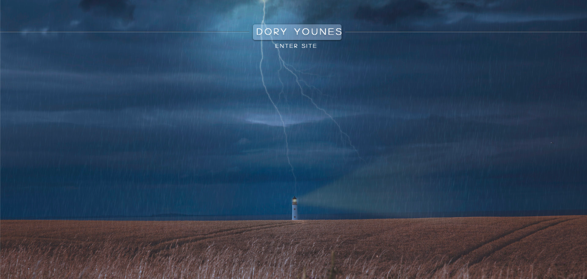
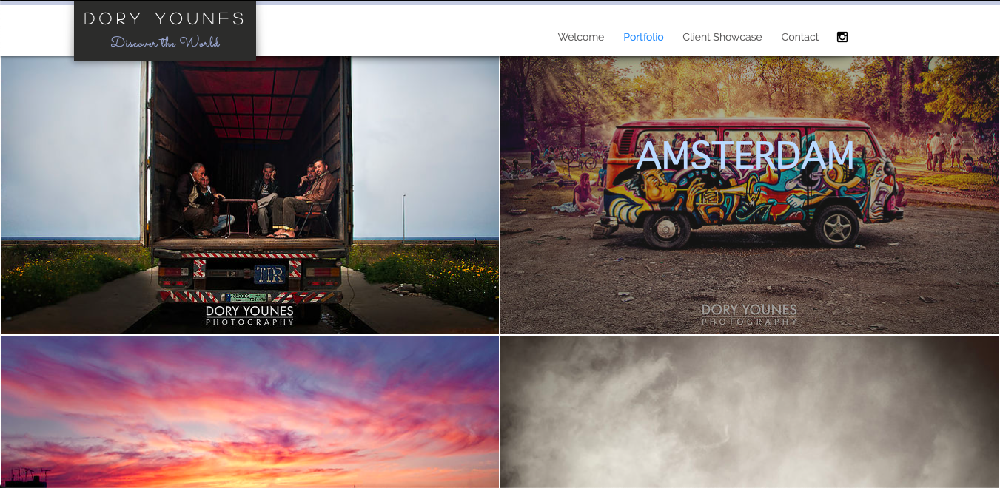

My next research site is the site of photographer Dory Younes. I enjoy the welcome page with the full-bleed background-image, and animated button to enter the full site; it is something that I would like to incorporate into my own site. The images on the initial portfolio page of this site are also lined up very well but with variations in size/aspect ratios, but the fact that they bleed into the whole webpage looks really interesting to me. Consistent top navbar just like the previous research sites solidifies that it is a great element to include in my site as well. Simplicity is still key, because there are only two navbar buttons plus a social media icon to instagram, so the rest of the navigation on the site is guided through imagery and content. The next page on the navbar is a client showcase of previous work she has been hired for and on this page the layout changes from full-bleed images to a fully responsive grid system of photographs. I enjoy how hovering over the images makes them more opaque as you select one, and one click pulls that image to hover in the center of the screen for a more personalized and enlarged view of the chosen image. This is very pleasing because instead of directing you to an entirely different page, you remain there and can X out to pick up where you left off viewing the page and choose another piece of content to focus on. This makes it more enjoyable to view, as it feels natural to navigate instead of falling into a cycle of finding buttons and links etc. In addition, there is no text descriptions, paragraphs, or even an about page on the site, a clear example of how beautiful content can speak for itself and drive the user experience in this portfolio site. Furthermore, the color palette of the site is very minimalist and simple featuring only shades of whites and grays, guiding users to focus entirely on the content for more intricate aesthetic values.

